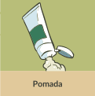
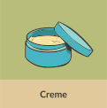
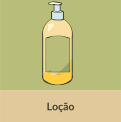
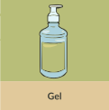
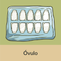
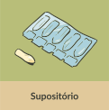
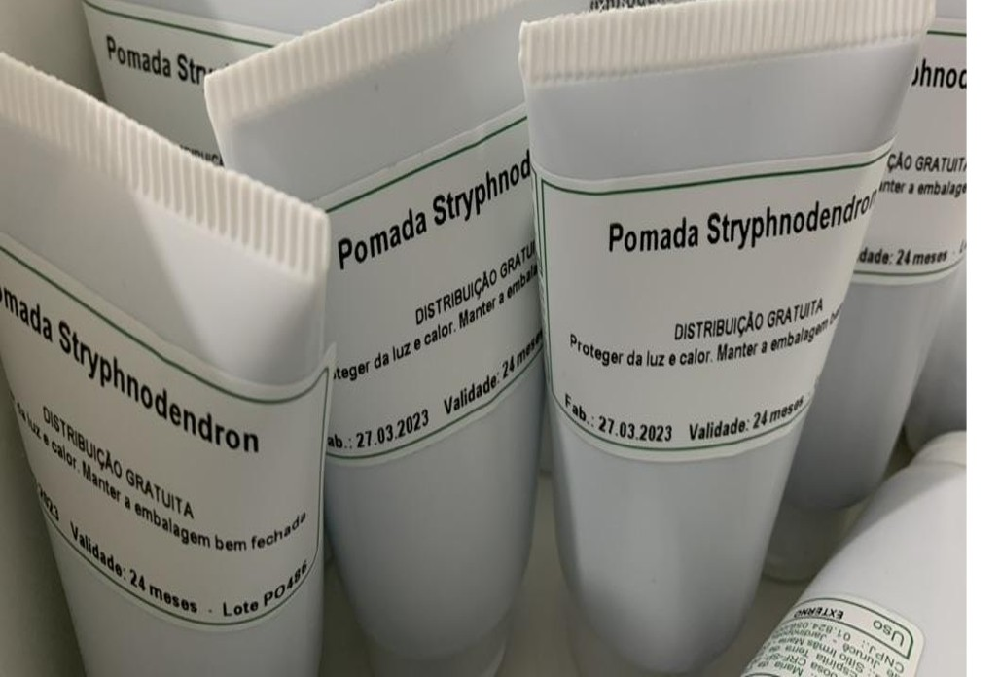
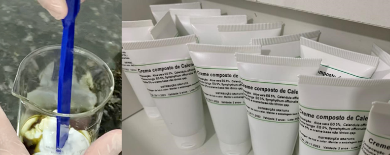
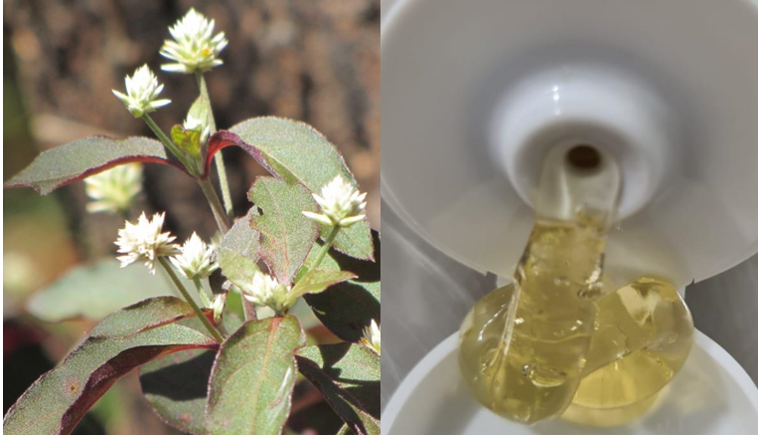

Neste momento, vamos descrever as diferentes apresentações de uso externo. Encontre os pares corretos para conhecê-las.






Pomada
É uma forma farmacêutica semissólida para aplicação na pele ou em membranas mucosas. A pomada é gordurosa e, quando aplicada na pele, funde-se, devido à temperatura do corpo ou à força da aplicação. Possui boa aderência no local da aplicação, ação emoliente (amolece a pele) e protetora da pele. Por isso, a pomada é o veículo ideal quando se deseja um efeito local ou próximo ao sítio de aplicação. Podem-se adicionar tinturas e/ou extratos fluidos e glicólicos, desde que a incorporação seja no máximo 10% do volume total da formulação.
Exemplo de pomada de Stryphnodendron adstringens.

Fonte: Acervo pessoal. Autor: Fabio Carmona. Local: Farmácia da Natureza, Jardinópolis, SP, Brasil.
Vantagens da utilização de pomada:
• Podem ser utilizadas tanto na pele como na mucosa;
• Boa conservação.

Desvantagens da utilização de pomada:
• Dificuldade de remover a pomada da pele e mucosas;
• Baixo poder de penetração na pele e mucosas;
• Não é recomendado o uso em lesões abertas.

Exemplo de prescrição de pomada.
Paciente fictício
Uso tópico:
Tintura de Symphytum officinale, folha (confrei) (RDE 2:1, etanol 65%) 10 mL
Pomada q.s.p 100 g
Aplicar nas áreas afetadas de uma a três vezes ao dia, mas não pode ultrapassar mais do que seis semanas. Não é recomendado o uso deste fitoterápico em lesões abertas.

Creme
É uma forma farmacêutica semissólida que consiste em uma emulsão, formada por uma fase lipofílica e outra hidrofílica, que pode conter um ou mais bioativos dissolvidos ou dispersos em uma base apropriada. É utilizada, normalmente, para aplicação externa na pele ou nas membranas mucosas. Os cremes são classificados como O/A (óleo em água) ou A/O (água em óleo). O creme O/A é menos gorduroso que o creme A/O, proporcionando uma sensação de frescor. Ambos apresentam rápida absorção e podem ser utilizados em grandes áreas da superfície corporal. São facilmente incorporados aos cremes: tinturas, extratos fluidos e extratos secos em concentrações de 10% a 15% em relação ao volume total da fórmula.
Exemplo de creme composto de Calendula officinalis.

Fonte: Acervo pessoal. Autor: Fabio Carmona. Local: Farmácia da Natureza, Jardinópolis, SP, Brasil.
Vantagens da utilização de creme:
• Pode ser utilizado tanto na pele como na mucosa;
• Espalha bem na pele e na mucosa;
• Bom poder penetrante na pele e na mucosa;
• Facilidade na remoção do creme na pele.
Desvantagem da utilização de creme:
• Menor tempo de conservação, quando comparado com a forma de pomada.
Exemplo de prescrição de creme com incorporação de tintura.
Paciente fictício
Uso tópico:
Tintura de Hamamelis virginiana, casca (hamamélis) (RDE 1:10, etanol 45%) 10 mL
Creme q.s.p. 100 g
Aplicar nas áreas afetadas duas vezes ao dia.
Exemplo de prescrição de creme com incorporação de extrato glicólico.
Paciente fictício
Uso tópico:
Extrato glicólico de Calendula officinalis, flores (calêndula) (RDE 1:10) 10 mL
Creme q.s.p. 100 g
Aplicar nas áreas afetadas duas vezes ao dia.
Loção
Loção é uma preparação líquida aquosa ou hidroalcoólica, com viscosidade variável, podendo ser aplicada na pele e/ou no couro cabeludo. A concentração das tinturas a serem incorporadas pode variar em torno de 10% a 20% do volume total da fórmula.
A loção cremosa é uma emulsão mais fluida do que o creme e sua função é hidratar e proteger a pele. Permite a incorporação de 5% a 10% de tinturas e/ou extratos fluidos e glicólicos em relação ao volume total da fórmula.
Vantagens da utilização de loção:
• Espalha bem na pele e no couro cabeludo;
• A loção cremosa possui ação hidratante;
• Apresenta menor poder de penetração, quando comparada com o creme.
Desvantagens da utilização de loção:
• A loção hidroalcoólica pode ressecar a pele;
• A loção aquosa possui um menor tempo de validade, devido à baixa conservação;
• A loção cremosa apresenta menor poder de penetração, quando comparada com o creme.
Exemplo de prescrição de loção.
Paciente fictício
Uso tópico:
Extrato fluido de Calendula officinalis, flor (calêndula) (RDE 1:1, etanol 40–50%) 20 mL
Loção hidratante q.s.p 200 mL
Aplicar na pele de forma suave até três vezes ao dia.
Gel
É a forma farmacêutica semissólida que contém um agente gelificante, cujo objetivo é fornecer firmeza em uma solução. Geralmente são transparentes ou translúcidos e ideais para peles oleosas e acneicas. Tinturas e/ou extratos fluidos e glicólicos, na concentração de 10% a 20% em relação ao volume total da fórmula, podem ser incorporados ao gel.
Exemplo de gel de Alternanthera brasiliana.

Fonte: Acervo pessoal. Autor: Fabio Carmona. Local: Farmácia da Natureza, Jardinópolis, SP, Brasil.
Vantagens da utilização de gel:
• Espalha bem na pele e na mucosa;
• Possui um baixo poder de penetração, sendo indicado para tratamentos superficiais;
• Provoca sensação refrescante na pele;
• Facilidade na remoção do gel.
Desvantagens da utilização de gel:
• Baixo poder de penetração;
• Demanda um menor tempo de validade, devido ao grande volume de água presente em sua
composição (baixa conservação).
Exemplo de prescrição de gel.
Paciente fictício
Uso tópico:
Tintura de Aesculus hippocastanum, semente (castanha-da-índia) (RDE 1:3,5–5, etanol 50%) 20 mL
Gel q.s.p. 100 g
Aplicar na pele, massageando de maneira suave até 3 vezes ao dia. Não é recomendado usar este produto em lesões abertas.
Óvulo
É uma forma farmacêutica sólida de dose única, que apresenta usualmente o formato ovoide e funde-se à temperatura do corpo. Destinados à administração por via vaginal, podem ser preparados com glicerina ou óleo de coco. Podem ser veiculados tinturas ou óleos essenciais com ação anti-inflamatória e/ou bactericida para tratamento de infecções e lesões no canal vaginal, com extensões no colo do útero. Tinturas, extratos fluidos ou óleos, na concentração de 5% a 10% em relação ao volume total da fórmula, podem ser incorporados à preparação do óvulo.
Vantagem da utilização de óvulo:
• Ação local.
Desvantagem da utilização de óvulo:
• Após a fusão do óvulo no canal vaginal, pode ocorrer o escoamento da formulação, o que
pode gerar desconforto e reduzir a aceitação do tratamento pela paciente.

Orientar sua paciente a aplicar o óvulo antes de dormir e, se possível, deitada. Assim, evita-se o extravasamento após o mesmo se fundir. Também é bom recomendar o uso de absorvente íntimo diurno durante todo o período de tratamento para não manchar a roupa íntima.
Exemplo de prescrição de óvulo.
Paciente fictício
Uso vaginal:
Tintura de Calendula officinalis, flor (calêndula) (RDE 1:5, etanol 70–90%) 10 %
Óvulo q.s.p. 1 unidade
Preparar 14 unidades.
Usar 1 óvulo à noite (via intravaginal) por uma semana, parar por 7 dias e repetir o tratamento por mais uma semana.
Supositório
É uma forma farmacêutica sólida de formato cônico e alongado, adaptada para introdução no reto. Constituído por cera de abelhas e/ou manteiga de cacau, ingredientes que se fundem, derretem ou dissolvem na temperatura do corpo, disponibilizando os ativos que podem exercer efeito local ou sistêmico. Por exemplo, são utilizados na constipação intestinal e no tratamento de hemorroida. Um ou mais bioativos, na concentração de 5% a 10% em relação ao volume total da fórmula, podem ser incorporados no supositório.
Vantagem da utilização de supositório:
• Ação local e/ou sistêmica.
Desvantagem da utilização de supositório:
• Desconforto do paciente durante a aplicação.
Exemplo de prescrição de supositório.
Paciente fictício
Uso retal:
Tintura de Aesculus hippocastanum, semente (castanha-da-índia) (RDE 1:3,5–5, etanol 50%) 10 %
Supositório q.s.p. 1 unidade
Preparar 7 unidades.
Usar 1 supositório à noite (via retal) por uma semana.